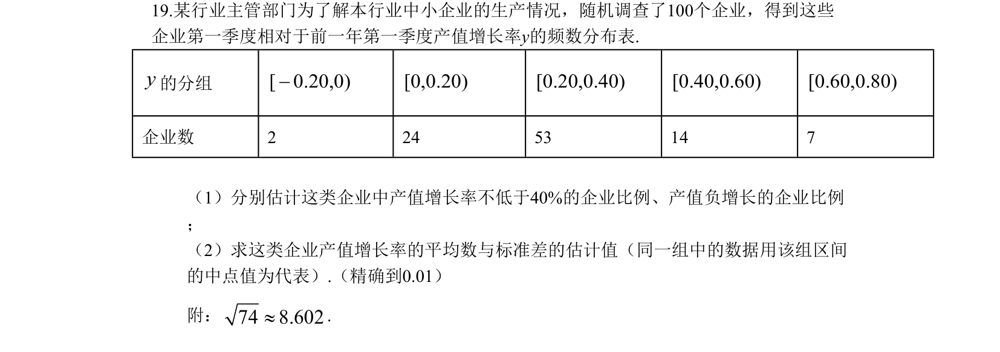
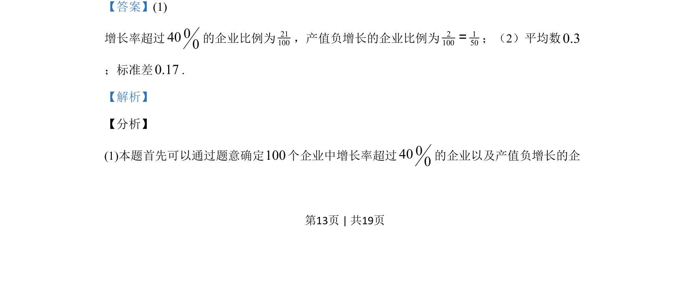
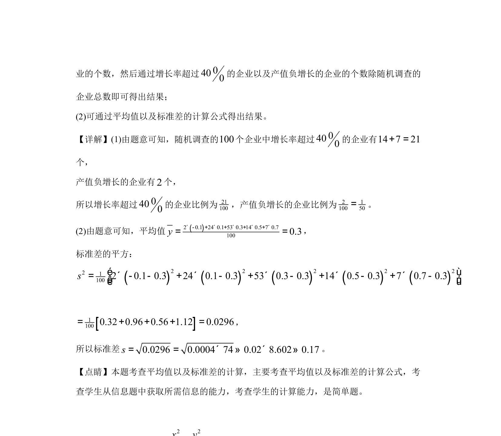

考点：频数分布表 用样本估计总体 平均数 标准差

本题通过频数分布表估计企业产值增长率的比例、平均数与标准差。


📄 原 PDF 第 13 页：
素材/真题/吉林/2008-2024·（吉林）数学高考真题/2019年高考数学试卷（文）（新课标Ⅱ）（解析卷）.pdf
19.某行业主管部门为了解本行业中小企业的生产情况，随机调查了100个企业，得到这些 企业第一季度相对于前一年第一季度产值增长率y的频数分布表. y的分组[ 0.20,0)-[0,0.20)[0.20,0.40)[0.40,0.60)[0.60,0.80) 企业数 2 24 53 14 7 （1）分别估计这类企业中产值增长率不低于40%的企业比例、产值负增长的企业比例 ； （2）求这类企业产值增长率的平均数与标准差的估计值（同一组中的数据用该组区间 的中点值为代表）.（精确到0.01） 附：74 8.602».
【答案】(1) 增长率超过0400的企业比例为21100，产值负增长的企业比例为2 1100 50=；（2）平均数0.3 ；标准差0.17. 【解析】 【分析】 (1)本题首先可以通过题意确定100个企业中增长率超过0400的企业以及产值负增长的企